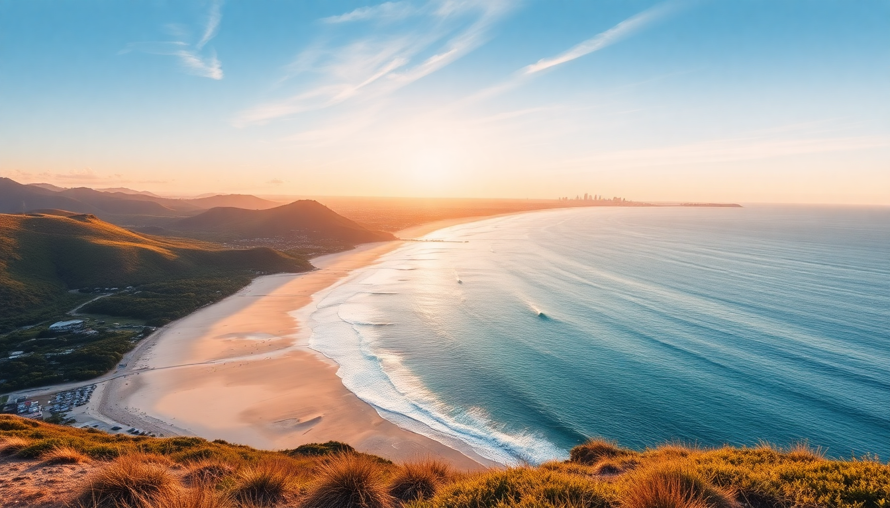

Best Beaches in Australia: Top 10 Coastal Gems

We spent three months driving the east coast of Australia, from the white-sand coves of Sydney up to the rainforest-backed shores of Cairns. I’m not going to pretend every beach is a winner—some are overcrowded, some have nasty rips, and a few are just flat-out overhyped. This list cuts through the noise. These are the ten beaches I’d actually return to, with honest notes on where to park, what to eat nearby, and how to avoid the crowds.
Which beaches in Sydney are worth the hype?
Sydney’s coastline is a series of sandstone headlands and pocket beaches, but not all of them deliver. Bondi is famous for a reason, but it’s also shoulder-to-shoulder by 10 a.m. on a Saturday. We found better value elsewhere.
- Bondi Beach – Go early (before 8 a.m.) or skip it. The Bondi to Coogee walk is the real draw. Grab a flat white at Speedo’s Café right on the sand—their avocado smash is solid, not overpriced.
- Tamarama Beach – Locals call it Glamarama for a reason. Smaller, less crowded, and the waves are punchy. Good for body surfing if you know what you’re doing.
- Palm Beach – The northern tip of Sydney. You can walk up to Barrenjoey Lighthouse for views that stretch to the Central Coast. The surf club does a decent burger.
- Shelly Beach (Manly) – Sheltered, calm water, and excellent snorkeling right off the rocks. We saw a sea turtle here in February. Less than a 15-minute walk from Manly Wharf.
If you’re short on time, skip Bondi and take the ferry to Manly, then walk to Shelly. It’s quieter, the water is clearer, and you can grab fish and chips at The Boathouse Shelly Beach afterward.
What are the best beaches on the Gold Coast?
The Gold Coast is a long, straight stretch of sand with high-rise apartments looming behind it. It’s not subtle. But the beach quality is consistently excellent, and the surf breaks are world-class. We spent a week here and learned which spots deliver.
- Burleigh Heads – This is the Gold Coast beach locals actually go to. The National Park headland gives you shade, and the waves at Burleigh Point are reliable for longboarders. The park has free barbecues.
- Snapper Rocks – Part of the Superbank, a long sandbar that creates one of the longest right-hand waves on earth. Even if you don’t surf, watching from the rocks at sunrise is worth it.
- Currumbin Beach – Quieter than Surfers Paradise, with a creek that forms a natural lagoon. Families love it. The Currumbin Surf Life Saving Club does a $15 lunch special that’s hard to beat.
- Surfers Paradise – I’ll be honest: it’s a tourist strip. The beach itself is fine, but the vibe is loud, commercial, and full of backpacker parties. Skip it unless you want the chaos.
We stayed at The Burleigh Beach Tourist Park—basic cabins but steps from the sand. For dinner, Rick Shores at Burleigh does modern Asian with ocean views, but book a month ahead.
Which Cairns beaches are safe for swimming?
Cairns is the gateway to the Great Barrier Reef, but the beaches here have a problem: box jellyfish and crocodiles. From November to May, stinger season means you need a full-body suit or a stinger net. Some beaches are better avoided entirely.
- Palm Cove – Our favorite near Cairns. The esplanade is lined with paperbark trees and cafés like Nu Nu (pricey but good). The stinger net is up from October to May, so swimming is safe. The sand is soft, and the views of Double Island are stunning.
- Port Douglas – Four Mile Beach – A long, flat beach with a stinger net in season. The water is calm, and you can walk for miles. We had lunch at The Little Larder on Macrossan Street—best toasted sandwich in town.
- Ellis Beach – A bit north of Palm Cove. There’s a surf life saving club here, and the stinger net is reliable. The Ellis Beach Bar & Grill does cold beer and decent pizza. It’s also where we saw a sea eagle dive for fish.
- Fitzroy Island – A 45-minute ferry from Cairns. The beach on the island (Nudey Beach, ironically named) has some of the clearest water we saw. Snorkeling gear is cheap to rent. No crocs, no stingers.
Avoid Trinity Beach and Yorkeys Knob—the swimming is iffy, and the croc warnings are real. Stick to the patrolled nets.
What makes Byron Bay beaches different?
Byron Bay is a town that lives on its reputation for alternative vibes and perfect waves. It’s expensive, crowded, and sometimes pretentious—but the beaches genuinely deliver. We spent five days here and found a few that cut through the hype.
- Main Beach – Right in town. Protected by the headland, so the water is flat and safe for kids. The surf club does a good breakfast. It gets packed by midday.
- The Pass – This is the surf beach. A long, peeling right-hand wave that draws crowds of longboarders. Walk up to the headland for a view of the whole bay at sunset.
- Wategos Beach – A small, sheltered cove at the foot of the Cape Byron walking track. The water is calm, and there’s a café (Wategos Beach Café) that does excellent acai bowls. Go early—the car park fills by 8 a.m.
- Tallow Beach – A wild, long stretch south of the cape. No facilities, no lifeguards, but also almost no people. We walked for an hour and saw maybe three other people. Good for a moody afternoon walk.
We ate at The Mez Club in town (Lebanese share plates, loud music) and Folk (breakfast bowls, long queues). Book dinner at Raes on Wategos if you want to splurge—it’s the white-linen experience with a view.
Are there hidden gem beaches along the east coast?
Yes, but they require a bit of driving. The stretch between Byron Bay and Cairns has dozens of beaches that most tourists skip. We found a few that felt like private patches of sand.
- Cabarita Beach – Just south of the Queensland border. A long, empty beach with a surf break that’s consistent but not crowded. The Cabarita Beach Hotel does a $12 pub lunch.
- Agnes Water / 1770 – The northernmost surf beach on the east coast. The water is warm, the waves are gentle, and the town is tiny. We stayed at Agnes Water Beach Club and had dinner at The Deck—fish tacos and cold cider.
- Rainbow Beach – Named for the colored sand cliffs behind it. The beach is wide and flat, and you can drive on it with a 4WD. It’s also the launch point for ferries to K’gari (Fraser Island) .
- Mission Beach – A sleepy town with a beach that stretches for 14 km. No high-rises, no chain stores. We took a white-water rafting trip on the Tully River from here. The Mission Beach Café does a decent flat white.
These aren’t polished tourist spots. They’re real Australian beach towns where the fish is fresh and the pace is slow. If you have the time, skip a day in Cairns and spend it here.
When is the best time to visit these beaches?
Timing matters more in Australia than most places. The east coast is long, and the weather varies wildly from Sydney to Cairns.
- Sydney and Byron Bay – Best from November to March. Summer is warm (25–30°C) but crowded. December and January are peak. Shoulder months (October and April) are cooler but less busy.
- Gold Coast – Year-round, but avoid the school holidays (December–January, April, July). The water is warmest in February and March. Winter (June–August) is still mild, around 20°C.
- Cairns and Port Douglas – The dry season (May–October) is the sweet spot. No stingers, no rain, and water temps around 25°C. The wet season (November–April) brings humidity, storms, and stinger suits. We went in June and had perfect blue skies.
If you’re planning a single trip, aim for late October or early November. You’ll miss the worst of the crowds in the south and the rain in the north.
FAQ
Do I need a car to get to these beaches? For Sydney, no. The train and ferry network covers Bondi, Manly, and Palm Beach well. For the Gold Coast, a car helps but isn’t essential—the G:link tram runs from Surfers Paradise to Broadbeach. For Byron Bay and Cairns, you’ll want a car. We rented from East Coast Car Rentals in Brisbane and drove north. It was cheaper than flying between cities.
Are there dangerous animals on these beaches? Yes, but the risk is manageable. In Cairns and north Queensland, swim only between the red-and-yellow flags at patrolled beaches. Never swim at dawn or dusk in croc country. For jellyfish, wear a stinger suit (available at most surf shops) from November to May. In Sydney and Byron Bay, the main risk is rips—always swim between the flags.
What’s the best beach for non-swimmers? Shelly Beach in Manly (Sydney) and Palm Cove (Cairns) have calm, shallow water that’s safe for wading. Main Beach in Byron Bay is also protected. Avoid beaches with surf breaks like The Pass or Snapper Rocks unless you’re a strong swimmer.
Conclusion
- Bondi is worth a morning, but Tamarama and Shelly Beach are better for actual swimming.
- Burleigh Heads beats Surfers Paradise for vibe and surf quality.
- Palm Cove and Port Douglas are the safest bets north of Cairns.
- Byron Bay’s Wategos is the best all-round beach in the region.
- Cabarita, Agnes Water, and Rainbow Beach are worth the detour for empty sand.
- Travel in late October or early November for the best weather across the whole coast.